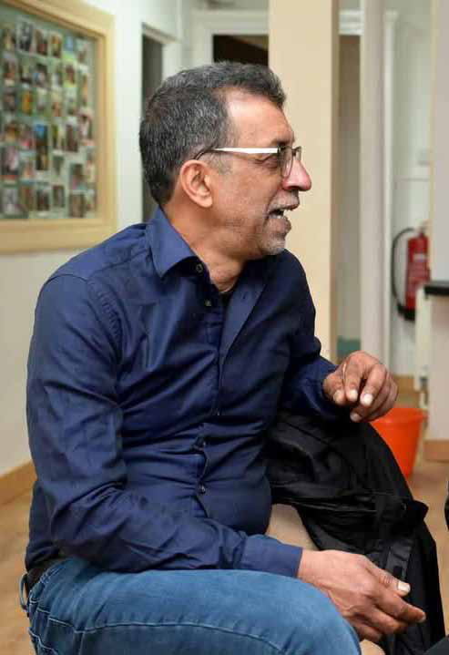
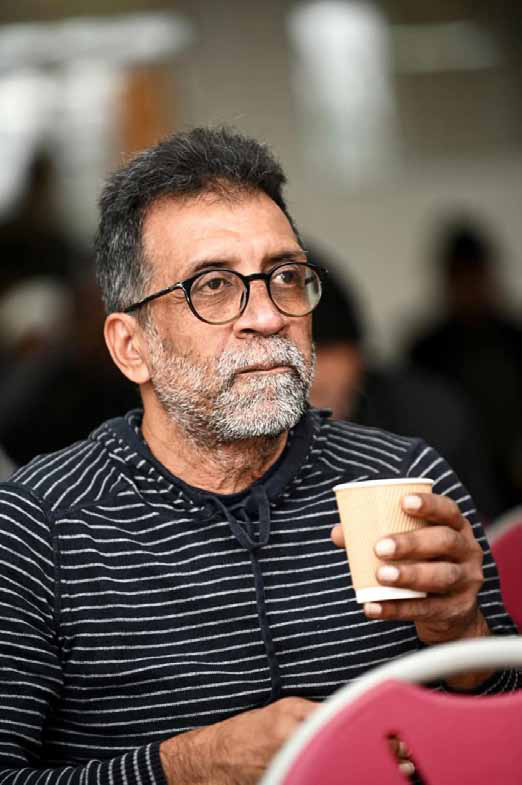
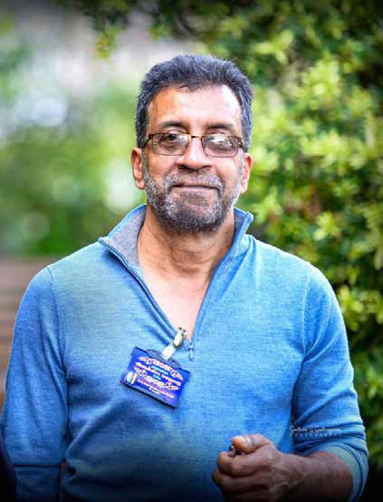
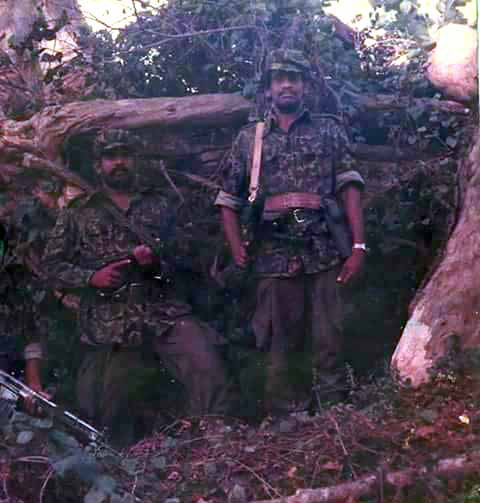

"Ethnic and Religious Nationalism Is Neither Democratic Nor Progressive - It Breeds Hatred and Authoritarianism"
"Ethnic and Religious Nationalism Is Neither Democratic Nor Progressive - It Breeds Hatred and Authoritarianism"
Jaffna Monitor hellojaffnamonitor@gmail.com 43 INTERVIEW "Ethnic and Religious Nationalism Is Neither Democratic Nor Progressive - It Breeds Hatred and Authoritarianism" BY: Our Special Correspondent - LTTE Co-founder Ragavan in an Exclusive Interview with Jaffna Monitor Part 04 H e helped forge the iron of the LTTE, stood shoulder-to-shoulder with the infamous Prabhakaran in his early militant days, and witnessed the birth of a movement that would scar a nation-and, to some extent, the world. Chinniah Rajeshkumar, better known as Ragavan, wasn’t just a member; he was a co-founder-an architect of the early Tamil liberation struggle. But by April 1984, disillusioned by the rising tide of extremism, senseless violence, brutal internal power plays, and the almost religious cult surrounding Prabhakaran, Ragavan made a life-altering choice. He severed ties with the LTTE and sought refuge in London.

Jaffna Monitor hellojaffnamonitor@gmail.com 44 Now a legal advisor and activist, Ragavan carries the weight of history, the clarity of hindsight, and a deep understanding of the world’s workings—especially the dynamics of left and right politics. In this exclusive interview series with Jaffna Monitor, he breaks his silence, offering unparalleled insights into the tumultuous early days of the LTTE and the politics that shaped—and shattered—an era. This compelling interview is being published in parts, each revealing a deeper layer of this extraordinary story. Some critics argue that the LTTE was founded more as a revenge- driven organization rather than a true liberation movement. They claim that Prabhakaran was a mastermind of vengeance and that the LTTE lacked the profound ideological wisdom necessary to achieve the freedom of an ethnic group. How do you respond to this perspective? I disagree. While vengeance played a role in decision-making, categorizing the LTTE solely as a revenge-driven organization would be an oversimplification. Revenge was part of a broader Tamil nationalist project, where unity and the notion of sole representation were central. Within this framework, a ‘traitor’ was seen as a greater threat than the enemy itself. In the 1970s, young men who took up arms believed that the greatest enemies of Tamil liberation were Tamils aligned with the major southern political parties—the UNP and SLFP—as well as Tamil intelligence officers in the Sri Lankan police force. Consequently, eliminating ‘traitors’ was seen as a necessary first step, with Tamil nationalists propagating the idea that "weeds" needed to be removed for a healthy crop to grow. Until the late 1970s, I too was convinced that ‘traitors’ had to be eliminated, as Tamil nationalist ideology had taken deep root in my mind. In LTTE parlance, the term "traitor" soon became synonymous with dissenters and rival militant organizations. By 1986, the LTTE had completely lost its liberatory character, transforming into an authoritarian military structure. I believe this is the inherent nature of ethnic nationalism. Could you elaborate on why you believe ethnic nationalism leads to authoritarianism and exclusion? Ethnic nationalist movements, by their very nature, are exclusionary—both politically and culturally—inevitably leading to authoritarianism, fascism, and intolerance. In ethnic nationalist discourse, language and culture are depicted as unique, pure, and immutable. As political scientist and historian Benedict Anderson observes, nationalism lacks philosophical depth, and yet it remains a powerful political force. A nation, he argues, is an imagined political community— constructed through cultural narratives—and is a modern phenomenon that emerged in late 18th-century Europe. However, I see a fundamental difference between national liberation movements against colonialism or settler colonialism and ethnic nationalist movements. Anti-colonial liberation movements were generally inclusive. For example, during India's independence struggle, people from various ethnic and
Jaffna Monitor hellojaffnamonitor@gmail.com 45 religious backgrounds were encouraged to join. I am not, however, generalizing that anti- colonial nationalist movements were entirely inclusive, as ethnic, caste, and religious factors often influenced the nationalist framework. For instance, Ambedkar and Periyar were skeptical of the Indian nationalist leadership due to the presence of Hindutva and Brahminical dominance within the Congress. While Hindu nationalist tendencies did exist within the Indian National Congress—and organizations like the RSS openly promoted an exclusive Hindutva nationalism—leaders such as Gandhi, Nehru, Subhas Chandra Bose, and Bhagat Singh advocated for inclusivity. Similarly, the African National Congress (ANC), under Nelson Mandela’s leadership, championed an inclusive struggle, even welcoming progressive individuals from the white settler colonial community into the liberation movement. South Africa, after all, was under apartheid rule imposed by white settler colonialists. That said, anti-colonial movements were not entirely free from ethnic, caste, or religious biases. Sri Lanka, in contrast, lacked a strong anti- colonial movement. Independence was merely ‘granted’ by the British, resulting in the creation of an ethnocratic nation-state. Sri Lanka's post-colonial nation-building project was shaped by Sinhala ethno- nationalism, which asserted that the entire island belonged exclusively to Sinhala Buddhists. The political imagination was that Sri Lanka was collectively owned by Sinhala Buddhists, leaving little space for minorities. In response to this ethnocratic state structure, Tamil ethno- nationalists asserted that the north and east were the traditional homelands of Tamils, collectively owned by them based on the modern construction of centuries of unique cultural and linguistic heritage. When such notions of exclusive ownership became a political force, those perceived as outsiders were denied the right to live in these regions, they could be expelled, killed, or ethnically cleansed. This ideology justified anti-Tamil pogroms, during which Tamils were killed, beaten, and their properties destroyed. Likewise, when Tamil ethno-nationalism gained dominance in the north and east, Sinhalese residents were expelled or killed by Tamil militants following the 1983 pogroms. The LTTE further reinforced this exclusivity when it became the dominant force after 1986, culminating in the ethnic cleansing of Muslims from the north in 1990. The moment Muslims sought to assert a separate identity,

Jaffna Monitor hellojaffnamonitor@gmail.com 46 they were cast as the ‘other.’ This leads me to an essential question: Can landless people—especially oppressed castes who were denied land rights for centuries and Malayaga Tamils, who have historically been denied land rights— invoke the idea of a traditional homeland? My argument is that ethnic and religious nationalism is neither democratic nor progressive. It is inherently divisive, fostering hatred, suspicion, and authoritarianism. This is a crucial lesson from the Tamil nationalist struggle. Did you and the early militants who took up arms have the understanding and vision to achieve liberation for the minority community and build a nation? Prabhakaran, I, and many others initially believed we were merely igniting the struggle—it was up to the next generation to carry it forward. We saw our actions as a spark, a catalyst rather than a complete movement. However, a complex historical trajectory eventually led to the formation of a Tamil national liberation army. In 1977, Sri Lanka transitioned to a neoliberal, market-oriented economy, abandoning its earlier state-controlled economic policies and principles aligned with the Non-Aligned Movement. This shift—heavily influenced by Western neoliberal ideology—involved liberalization, privatization, and the opening of the economy to foreign investment.
Jaffna Monitor hellojaffnamonitor@gmail.com 47 India, which had traditionally aligned itself with socialist countries and played a leading role in the Non-Aligned Movement, viewed Sri Lanka’s realignment with the West as a geopolitical threat to regional security. There is a widespread myth that neoliberalism and democratic norms go hand in hand. In reality, neoliberalism frequently coexists with authoritarianism. For instance, in 1973—amid Cold War tensions—Chile became a testing ground for neoliberal economic reforms. The Augusto Pinochet regime crushed political opposition, suppressed trade unions, and was responsible for widespread torture, killings, and disappearances. Indigenous lands were expropriated and handed over to corporations and wealthy elites. Pinochet’s authoritarian rule, paired with neoliberalism, was seen as essential for fundamentally reshaping national politics and culture. While Western powers championed democracy and human rights at home, they actively supported Pinochet’s regime abroad. A similar pattern emerged in Sri Lanka during the mid-1970s. Neoliberalism was introduced under the veneer of democracy, while trade unions were weakened and authoritarianism was institutionalized. The creation of the executive presidency and the introduction of repressive laws such as the Prevention of Terrorism Act (PTA)—primarily used to arrest, torture, and detain Tamil youths— marked this transition. India, recognizing the rising discontent among Tamils, sought to capitalize on it by supporting Tamil militant groups as a strategic tool—to exert pressure on Colombo and to influence the unfolding conflict. The 1983 state-sponsored anti-Tamil pogrom became a turning point. The violence dramatically increased recruitment into militant groups. Tamil support for militancy was less a product of ideological conviction and more a visceral reaction to state violence. Many Tamil youths, radicalized by the pogrom, saw armed struggle as the only viable path to securing a homeland. India played a critical role in this phase, by training, arming, and funding Tamil militant groups—decisively shaping the trajectory of the armed resistance. The LTTE eventually emerged as the most powerful among them, positioning itself as the sole representative of the Tamil people. The rest is history. Some political analysts argue that if leftist democratic forces had led the Sri Lankan Tamil movement against the Sinhala-dominated government, the outcome would have been different. What is your perspective on this view? They mistakenly assume that the right to self-determination applies universally to all national liberation struggles. Lenin’s concept of the national question must be understood within its specific historical and imperialist context. According to Lenin, one aspect concerned Russian imperialism and the oppression of nationalities within the empire; the other focused on colonial imperialism and anti- colonial nationalist struggles. While he supported the right to self- determination to weaken imperialism, his ultimate goal was a socialist revolution. He warned against unconditional support for all
Jaffna Monitor hellojaffnamonitor@gmail.com 48 nationalist movements and urged Marxists to distinguish between revolutionary and reactionary nationalism. In Sri Lanka’s case, applying Lenin’s principle to Tamil ethnic nationalism amounts to endorsing an exclusive and reactionary form of nationalism. Sri Lanka is not an imperialist power in itself but rather functions as an agent of imperialism. As political philosopher Frantz Fanon observed, the national bourgeoisie in post- colonial states often serve as proxies for Western capital—indulging in decadence while failing to fulfill their historic role of driving genuine national development. Sri Lanka’s current economic crisis and the elite’s misappropriation of public funds only reinforce Fanon’s warning. Globalization has intensified such exploitation. Garment workers in Free Trade Zones, for instance, face long hours, poor pay, and union- busting tactics—despite the sector generating nearly $6 billion in exports. Malayaga Tamils in plantations continue to struggle for a basic wage of 1,000 rupees a day. Likewise, domestic workers in the Middle East suffer abuse and low wages. These forms of exploitation cut across ethnic lines, though certain sectors remain ethnically concentrated. Meanwhile, land appropriation in the name of development has deepened landlessness and environmental degradation. Both Sinhala and Tamil nationalists often ignore these systemic issues and are trapped in romanticized pasts. What we need is resistance that transcends ethnicity and unites people across class, caste, and gender. The traditional left’s approach—treating Lenin’s principle as sacred doctrine—fails to account for evolving socio-political realities. In practice, the Tamil nationalist struggle and the demand for self-determination have not fostered a space where democratic socialist norms and values can flourish. Instead, class unity has been deeply fragmented by both Sinhala and Tamil ethnic nationalisms, as well as by the ethnocratic nature of the state. The result has been the emergence of an authoritarian state and the authoritarianism of the LTTE. Political strategy must evolve in response to material conditions, rather than remain bound to outdated conceptual frameworks. Today, national sovereignty itself is challenged by neoliberal globalization. Borders—national, cultural, and political—are increasingly fluid. Yet some leftists in the South continue to advocate self-determination without rigorous analysis, seeing the Tamil issue as something for Tamils alone. This reflects both intellectual laziness and a lack of class analysis. Some Tamil leftists claim that had the movement been led by leftist forces, it would have been more inclusive. But their worldview remains essentially nationalist, cloaked in socialist language. What’s missing is a commitment to socialism’s core values: human emancipation, justice, and democracy. Ethnic nationalism promotes ideas of uniqueness and purity, which are fundamentally at odds with pluralism and democratic norms. In ethnic nationalist discourse, the denial of the right to dissent is intertwined with the depoliticization of the masses. It disregards class, caste, and gender divisions,
Jaffna Monitor hellojaffnamonitor@gmail.com 49 LTTE to centralize power. Believing that a left-led Tamil movement would have changed the outcome is, in my view, wishful thinking. Instead, we must learn from the Aragalaya, which emerged during the recent economic crisis. As Italian Marxist Antonio Gramsci observed, “It may be ruled out that the immediate economic crises of themselves produce fundamental historical events; they can simply create a terrain more favorable to the dissemination of certain modes of thought and certain ways of posing and resolving questions involving the entire subsequent development of national life.” For the first time in post- independence Sri Lanka, an economic crisis gave rise to a political consciousness rooted in cross-ethnic unity. Yet the Aragalaya was not confined to minority concerns. Its vision emphasized people’s democracy, social justice, redistribution, and equal access to education, employment, and healthcare. It represented a call for an inclusive political future. This is only a beginning, but it offers a potential path forward. We must build on the promoting ethnic unity at the expense of broader goals of social justice. Groups like the EPRLF, EROS, and NLFT attempted to merge ethnic nationalism with class struggle, arguing that Tamil national liberation was a necessary first step toward socialism. However, this framework was fundamentally flawed. Their failure stemmed not from weak leadership, but from the inherent contradiction between ethnic nationalism and inclusive leftist politics. Tamil nationalist discourse portrayed Tamils as a unified whole, silencing internal differences and enabling the

Jaffna Monitor hellojaffnamonitor@gmail.com 50 counter-hegemonic discourse that emerged during the Aragalaya while recognizing that categories like ethnicity are historically constructed—not fixed. Unity cannot be achieved by ignoring differences, but by acknowledging and working through them. A former early member of the LTTE mentioned that you were the only person he ever saw smoking a cigarette in front of Prabhakaran, suggesting that, in the early days, he was not perceived as a supreme figure within the organization. In your view, when did Prabhakaran transition from being a friend and companion to an object of reverence? Did you notice any early signs of this transformation within the LTTE? In the initial days, although Prabhakaran prohibited smoking, those who were already smokers were allowed to continue. I was a smoker, along with a few others such as Patkunam, Ravi, and Matthaya. We were given a ration of five cigarettes per day. Until I left the organization, Prabhakaran treated me as a companion. However, from 1980 onwards, I began to question the LTTE’s ideology, which made him view me as a problematic figure. He expected unquestioning loyalty, but I believe he still had a soft spot for me, as I had provided him protection during the 1970s when he lacked widespread support. After 1983, he emerged as a ruthless, charismatic, and authoritarian leader. I don’t see this as a sudden transformation but rather as a process. However, it was difficult for me to address him as "leader." Let me share a humorous anecdote. After the 1983 pogroms, several Tamil youths from Germany, the UK, and France traveled to India to join the militant organizations. Among them was a man named Bahi. By then, Prabhakaran had assumed the title of supreme leader and was addressed as Thalaivar by the new recruits, while most senior members still called him Thambi (younger brother). Bahi, unsure of how to strike a balance between respect and familiarity, coined the term 'Thalaivar Thambi Anna' (Leader–Younger Brother–Elder Brother). As I mentioned in the first part of my interview, by the early 1980s, Prabhakaran had already begun to perceive himself as the embodiment of Tamil Eelam—almost as if he were destined to achieve it. While he never explicitly stated this, his actions made it clear that he believed he alone could create Tamil Eelam, and that, regardless of the odds, he would carve it out through sheer determination. After 1983, with the expansion of militancy, he became an even more ruthless, authoritarian, and charismatic leader. Before 1983, the LTTE was a small organization. While it carried out assassinations of ‘traitors’ and police officers, it was not a formidable force, and Prabhakaran was not widely known. Yet, within the LTTE, he had already begun asserting himself as the undisputed leader. The rapid expansion of the LTTE and other militant groups after 1983, coupled with Indian training and support, brought them into the public spotlight. The LTTE and other militant groups actively engaged in propaganda, publishing official newspapers. This outreach made Tamils in Sri Lanka increasingly aware of the militant
Jaffna Monitor hellojaffnamonitor@gmail.com 51 organizations, leading to greater financial and logistical support. At this juncture, militant leaders gained official recognition. Both local and international media— especially Indian media—began covering the militant movements and their leaders. Their interviews were published along with their photographs, making them recognizable figures. Prabhakaran was meticulous about his public image; he would have multiple photos taken and carefully select the best one for publication. In early 1984, I had a conversation with Balasingham about the LTTE’s internal repression and undemocratic practices. He acknowledged these issues and told me that until 1983, Prabhakaran was merely a chieftain. However, as the number of cadres grew and his prominence increased, he suddenly became a king. To maintain control and assert his authority, Prabhakaran resorted to intensifying internal repression and consolidating authoritarianism to its full extent. The LTTE, in many ways, was a product of the society from which it emerged. Tamil society had deeply entrenched caste hierarchies and a long history of gender oppression, with power traditionally concentrated in the hands of dominant-caste men. Similarly, the patriarchal family structure reinforced male dominance in social, cultural, and political spheres. I believe this mindset shaped the structure and functioning of the LTTE as well. The idea of one leader, one ideology, and one movement may have been an extension of the hierarchical and patriarchal tendencies of Tamil society, reinforced by ethnic nationalist discourse. Over time, this belief system elevated Prabhakaran into an unquestionable supreme leader. And he did not resist this transformation—he fully embraced it. Early members of the LTTE, including Anton Master—the then Military Office Chief ‘of the LTTE—told us that within the organization, loyalty to Prabhakaran was prioritized over talent. Those who praised him and remained loyal were given preference over individuals with genuine talent and commitment. What is your take on this?

Jaffna Monitor
hellojaffnamonitor@gmail.com
52
It is a mix of loyalty and competence.
Prabhakaran always placed utmost importance
on personal loyalty. According to his
perception, the leader and the movement are
two sides of the same coin. Loyalty to him was
equated with loyalty to the organization itself.
However, as a military organization, the LTTE
could not function solely based on loyalty—
it also required competence and strategic
acumen. For instance, Baby Subramaniam
was deeply devoted to Prabhakaran, but in
my view, he did not possess the necessary
leadership skills to build and manage a
structured military command. He may
have had other strengths, but he was never
appointed to a high-ranking position to lead
the LTTE’s armed unit.
Conversely, individuals like Karuna,
Theepan, and Balraj were both unwaveringly
loyal to Prabhakaran and highly skilled
military commanders. Their rise within the
organization was not purely due to their
allegiance; their battlefield expertise, strategic
thinking, and leadership capabilities also
played a crucial role in their prominence.
One of the major allegations against
you is that you were expelled from the
LTTE due to your love for your wife,
Nirmala. Some claim that this was the
reason for your departure. What is the
truth?
The claim that I was expelled due to my
relationship with Nirmala is factually
incorrect. When I left the LTTE in April 1984,
Ragavan with his wife Nirmala

Jaffna Monitor
hellojaffnamonitor@gmail.com
53
Nirmala was still imprisoned in Batticaloa
prison and I had never even met her. I had
only met her first husband, Nithiyanandan, in
India.
During the Batticaloa jailbreak in September
1983, Nithiyanandan and others managed
to escape, but Nirmala was left behind as
she was held in the women’s section. In June
1984, the LTTE carried out a separate prison
break specifically to free her. By that time,
I was no longer part of the movement. My
relationship with Nirmala began only after I
had left the LTTE, and after she too had left
the organization at the end of 1984.
The truth is that neither Prabhakaran, any
key figures within the LTTE, nor the LTTE as
an institution ever made such an allegation
against me officially.
When serious criticisms were directed at
the LTTE, and they were unable to provide
a logical response, their primary strategy
was character assassination. When it came
to women, such slander often took on a
particularly vicious and sexualized nature.
While the LTTE itself never officially engaged
in spreading falsehoods about me or Nirmala,
they also made no effort to counter or refute
the disinformation spread in their name by
LTTE supporters.
Another relevant point—Prabhakaran’s wife,
Mathivathani, was in love with a fellow student
before she and her friends were abducted by
the LTTE while on a hunger strike to death.
What is undeniable is that she later distanced
herself from her former lover and fell in love
with Prabhakaran. Prabhakaran indeed loved
Mathivathani, and she reciprocated those
feelings.
Falling in love is natural. But if someone
accuses me of wrongfully loving a woman who
was married, then by the same logic, couldn't
one argue that Prabhakaran falling in love
with Mathivathani—who was still in love with
someone else at the time—was also wrong?
I am not making a moral judgment here,
but those who criticize me on these grounds
should not throw stones from a glasshouse.
After the LTTE split in 1979, although I
supported Prabhakaran, I began to reflect
on the ideological nature of the movement.
While I was a nationalist at the time, I started
questioning whether the organization’s
intolerance of criticism and authoritarianism
aligned with the principles of a true liberation
movement.
In 1982, after the Pondy Bazaar shooting, I
wrote a detailed letter to Anton Balasingham,
expressing my concerns about the LTTE's
trajectory and how it was veering off course.
I was later informed by Balasingham that
LTTE supporters in the UK had discussed
my concerns and had kept that letter for a
long time. However, as I mentioned earlier,
after the events of 1983, there was no longer
any space for political discussion. That said, I
acknowledge my moral responsibility for all
the actions committed by the LTTE until 1984,
as I was a part of the organization during that
period.
Now, let me clarify the reasons for my
departure from the organization. The real
reason I left the LTTE was that it had fully
evolved into an extreme personality cult,
devoid of internal democracy, and had become
increasingly violent in its internal structure.
Any other explanations given for my departure
are simply false.
Did Prabhakaran force Mathivathani to
love him?
Jaffna Monitor hellojaffnamonitor@gmail.com 54 No, no—not at all. Their love developed naturally, and their relationship evolved organically. There was no coercion involved. However, there was an element of power as Prabakaran was a leader. There are still lingering allegations that it was Prabhakaran-not the Sri Lankan forces-who killed Sellakili during the 1983 ambush that triggered the bloody ethnic violence. Some early LTTE members have told Jaffna Monitor that Sellakili may not have died from army bullets but from Prabhakaran’s own gunfire-possibly because he was seen as a potential threat to Prabhakaran’s leadership. How credible do you find these allegations? You were still in the LTTE at the time-what is your perspective on what really happened? I believe it's incorrect to say that the 1983 ambush triggered the ethnic violence. The University Teachers for Human Rights (Jaffna) [UTHR(J)] reported that, in the weeks leading up to the Black July violence of 1983, the government had already been preparing to unleash massive force against Tamils. The ambush was used merely as a convenient starting point. Tamil addresses had been collected in advance, and it was a meticulously planned operation orchestrated by ministers like Cyril Mathew, who had even organized a private army. Several credible sources confirm that the 1983 pogrom was premeditated and that the JR government aided and abetted its execution. Regarding the question of Sellakili’s death, I cannot confirm that LTTE leader Prabhakaran personally shot and killed him. However, there was suspicion that Prabhakaran may have ordered his execution. I was not part of the LTTE at the time. In fact, after the Pondy Bazaar shooting in 1982, I became increasingly disillusioned with the LTTE’s militaristic and authoritarian direction and decided to remain in India. Although I had initially planned to escape on bail with Prabhakaran and return to Sri Lanka, we had an argument before the escape. I told him that targeting PLOTE leaders was wrong and that we should instead negotiate with them to work together for a common cause. I even suggested holding a meeting with all LTTE members and, if the majority agreed that Umamaheswaran should be killed, I would carry out the task myself. But Prabhakaran rejected my proposal and stated that even if everyone opposed killing Umamaheswaran, he would still go ahead and do it himself. As a result, I chose not to accompany him to Sri Lanka. After escaping on bail, I remained underground in India and was inactive until the 1983 pogrom. However, after the 1983 pogrom, I decided to re-engage with the LTTE. One member who had participated in the ambush (whom I will refer to as X, as he is still alive and it would be inappropriate to name him without his consent—he left the LTTE in 1984) told me that he suspected Sellakili was killed either by Kittu or Lala Ranjan. He said that Sellakili had a sexual relationship with a woman who became pregnant and that Prabhakaran decided to have him killed because of it. It was an open secret within the organization that Sellakili had multiple sexual partners, even in the nascent years of the movement around 1977–78. Almost all of them were
Jaffna Monitor hellojaffnamonitor@gmail.com 55 married women. Prabhakaran was aware of this but never commented on it—he seemed to tolerate Sellakili’s behavior. However, the woman who became pregnant was unmarried. I believe she was a university student. I gathered that this issue became a talking point, and therefore, in order to preserve the ‘purity’ of the organization, Prabakaran must have felt compelled to take action against Sellakili. According to X, Sellakili was the driver of the vehicle on the day of the ambush. Before the operation, he parked the vehicle, gave instructions to another member on how to start it, and handed over the keys. X noted that this was unusual, as Sellakili would never typically entrust the keys to anyone. He believed that Sellakili may have been suspicious of the possibility of “friendly fire.” In any case, Prabhakaran had a mindset of eliminating ‘problematic’ members on the battlefield. When he was close to me, he shared his ideas openly. If a member failed to follow LTTE discipline or held differing views, rather than allowing them to leave the organization— potentially creating a "traitor" or enemy—it was considered preferable to send them into battle. If they were not killed by the enemy, they could be eliminated by one of Prabhakaran’s trusted members, who would never reveal the truth. In fact, increasing the number of martyrs was seen as more beneficial than increasing the number of traitors, as it served the LTTE’s reputation and legacy. That was Prabhakaran’s logic. Given the circumstantial evidence, there is a possibility that Sellakili might have been killed by ‘friendly fire.’ However, I cannot confirm this without concrete proof. It is interesting to note that when Prabhakaran fell in love with Mathivathani, she became pregnant before their marriage, which took place on October 1, 1984. Their son, Charles Anthony, was born on April 18, 1985—just over six months later. This means Mathivathani was already around two and a half months pregnant at the time of the wedding. I leave it to the readers to contemplate the double standards involved. I want to emphasize that this is not an attempt at character assassination or a moral judgment, but rather an observation of the contradictions within the movement’s leadership. To Be Continued... Sellakilli and Prabhakaran at Udayarkaddu Training Camp, 1983
